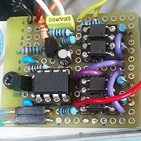
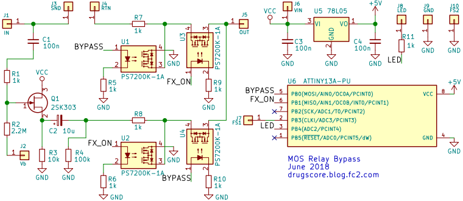
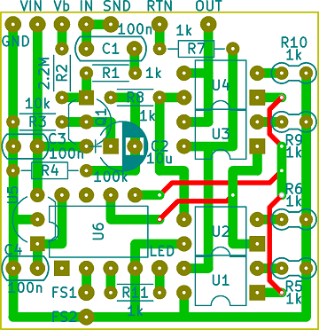

MOSリレーバイパス
2018年06月21日 カテゴリー：自作エフェクター（アナログ）

ソリッドステートリレーを利用したエフェクトのバイパス方法をバッファーなしで検討していました（別記事参照）が、音漏れやポップノイズの問題が解決できなかったため結局バッファードバイパスにすることにしました。BOSS筐体BD-2に採用しています。あまり利点がないバイパス方式となってしまいましたので、再度作ることはなさそうです。素直にラッチングリレーを使った方がよいでしょう。
▽回路図

秋月電子で安売りしている光MOSFET PS7200K-1Aを使用しましたが、フォトリレーTLP222Aでも問題ないと思います。エフェクト側の入力部分の回路によってはバイパス音に影響が出るので、本来は入力の分岐前にもバッファーを入れた方がよさそうです。バイアス電圧Vbはエフェクト回路から引っ張ってきています。
▽レイアウト

▽Arduinoスケッチ（ATtiny13A用）
#define SW_PIN 3
#define BYPASS_PIN 0
#define FX_ON_PIN 1
#define LED_PIN 4
int sw_value = 0;
long sw_count = 0; // intだとオーバーフローするかも
boolean fx_state = false;
void setup() {
pinMode(SW_PIN, INPUT_PULLUP); // 内部プルアップ抵抗有効
pinMode(BYPASS_PIN, OUTPUT);
pinMode(FX_ON_PIN, OUTPUT);
pinMode(LED_PIN, OUTPUT);
digitalWrite(BYPASS_PIN, HIGH); // 初期値はバイパス
digitalWrite(FX_ON_PIN, LOW);
digitalWrite(LED_PIN, HIGH); // 電源オン時LEDが2回点灯
delay(300);
digitalWrite(LED_PIN, LOW);
delay(300);
digitalWrite(LED_PIN, HIGH);
delay(300);
digitalWrite(LED_PIN, LOW);
}
void loop() {
sw_value = digitalRead(SW_PIN);
if (sw_value == LOW) {
sw_count += 1;
} else {
sw_count = 0;
}
if (sw_count == 10) { // 10msスイッチ押すとエフェクト切替（チャタリング対策）
fx_state = !fx_state;
if (fx_state) {
digitalWrite(FX_ON_PIN, HIGH); // HIGHにするピンの順番が逆だとポップノイズあり
delay(2); // これがないとポップノイズあり
digitalWrite(BYPASS_PIN, LOW);
digitalWrite(LED_PIN, HIGH);
} else {
digitalWrite(BYPASS_PIN, HIGH);
delay(2);
digitalWrite(FX_ON_PIN, LOW);
digitalWrite(LED_PIN, LOW);
}
}
delay(1);
}
ATtiny13Aの使用方法はこちらの記事へ